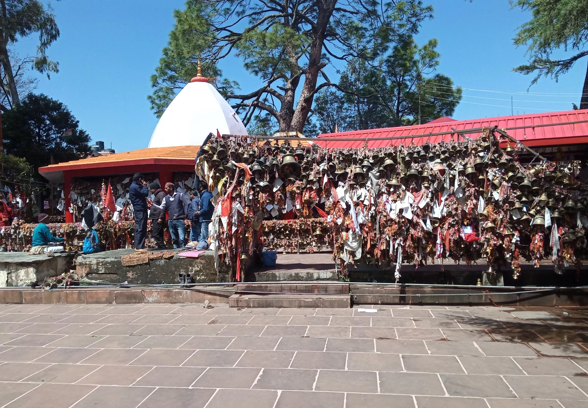
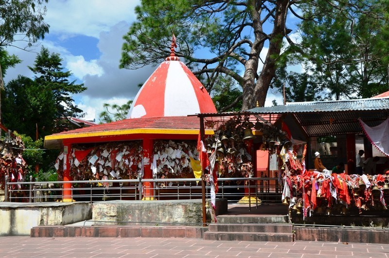
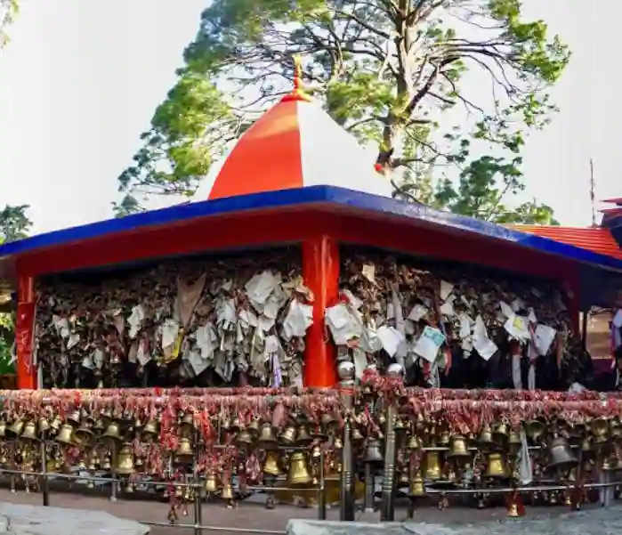
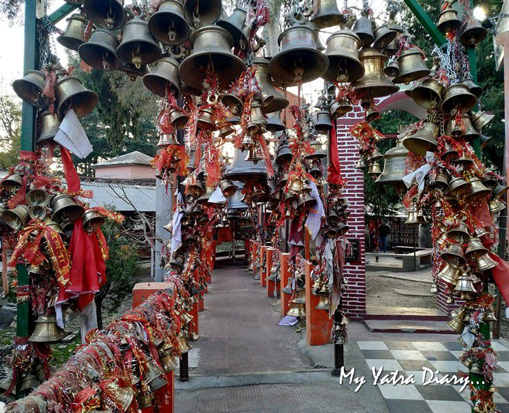
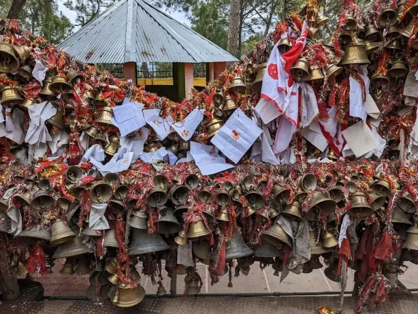
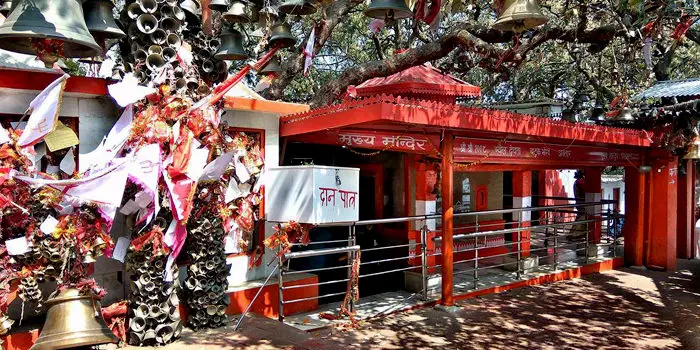

Chitai Golu Devta Temple, popularly known as Chitai Temple, stands as one of the most sacred and enchanting shrines in the Kumaon region of Almora, Uttarakhand. Located about 8–9 km from Almora town along the picturesque Jageshwar Dham Road, this ancient temple (tracing its roots to the Chand Dynasty era, around the 12th century) is dedicated to Lord Golu Devta — revered as an incarnation of Lord Shiva in the form of Gaur Bhairav, and worshipped throughout Kumaon as the God of Justice (Nyay Devta) who swiftly grants sincere wishes and delivers fair resolutions.
The temple's most striking feature is the thousands of copper bells that hang from every tree, branch, and structure — each one tied by a devotee whose prayer, plea for justice, or heartfelt wish has been miraculously fulfilled. Handwritten petitions on paper, detailing personal stories of grievances, desires, or gratitude, are tied alongside the bells, creating a powerful, living testament to unwavering faith and divine grace. Nestled amid serene pine and deodar forests with sweeping valley views, the hilltop temple radiates profound peace, spiritual energy, and deep cultural resonance, drawing pilgrims, spiritual seekers, and travelers to experience its unique aura of hope and mysticism.
March to June for pleasant weather and easy access; September to November for clear skies and post-monsoon freshness (ideal for views and fewer crowds). Temple open daily ~6 AM to 10 PM. Early mornings or weekdays offer a quieter, more meditative experience; arrive early during festivals like Navratri for vibrant energy.
Thousands of hanging bells symbolizing answered prayers, handwritten petitions for justice and wishes, traditional Kumaoni architecture, peaceful hilltop setting with forest trails, and darshan of Golu Devta on his white horse — perfect for offering bells, writing prayers, photography, and immersing in spiritual vibes. Nearby Jageshwar adds to the sacred pilgrimage experience.
Buy a bell from local shops in Almora (or nearby) and tie it after writing your sincere wish or prayer on paper, maintain silence and respect the sanctity, wear modest clothing, carry water and snacks for the short uphill approach, visit early to avoid crowds, and stay for aarti if timing allows to fully feel the divine atmosphere.
"Amid the endless chime of bells that echo fulfilled promises, Chitai Golu Devta listens in silence — a timeless guardian of justice where every hanging wish becomes proof that faith, when pure, moves mountains and mends hearts."